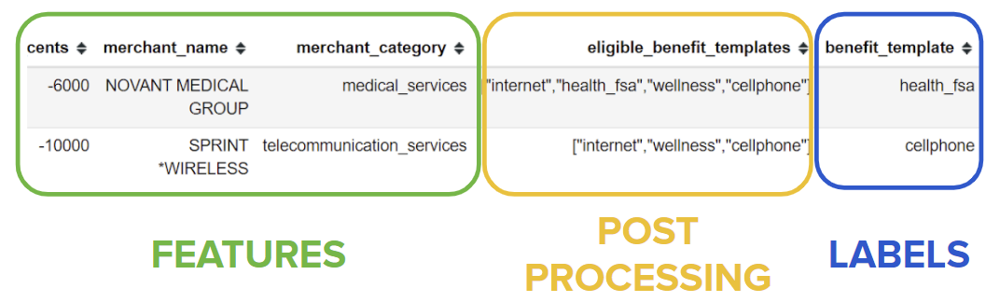

Financial Transaction Classifier
For the full story check out
this blog post
THE BUSINESS PROBLEM
Have you ever received a benefit package from an employer and felt that it was too
complicated to keep track of your spending amounts? Or can you recall a time when the
benefit reimbursement process was fast and free of hassle?
To address these increasingly common problems, the startup
Benepass is combining
employer benefits and stipends on a single payment card in order to simplify and
modernize the benefits process. Benepass has an important pain point: When an employee from
Company X goes to a store and purchases something,
how can Benepass use the transaction data to assign it to a benefit category that the
employee is eligible for?
RESOURCES
This project was performed as a 4-week independent consulting project, by which I was introduced to Benepass
through the Insight Data Science Program.
The data given to me by Benepass has a mixture of numerical, text, and categorical features
(green), data which I use for post-processing (yellow), as well as multiple labels (blue).

In general, I overcame 3 significant challenges with this dataset: there were only 3 usable features,
the dataset was very small (350 rows), and the labels were highly imbalanced. To manipulate the data
and train a machine learning model I made use of the SMOTE, Pandas, and Scikit-learn libraries
in Python.
SOLUTION
I successfully created a multi-class classification model (called WhichBenefit)
which produces probability
scores for each class, where in most cases the predicted class can be taken as the
class with the highest probability. The model probabilities are then filtered through
a selection of benefits that a given employee is eligible for.
I implemented this data product into a
production-ready Python package which is now implemented in Benepass' live workflow.
IMPACT
WhichBenefit adds business value by automating the classification of transactions into
benefit categories and by significantly increasing the performance over the
current approach. It also allows for new companies and transactions,
which will help Benepass scale up their production with minimal problems.
As a Python package, it is also adaptable such that the machine learning
model can be retrained and quickly replace the current model in the transaction pipeline.
While the code for this process is proprietary, I have a more thorough qualitative
description of the project on
this blog.